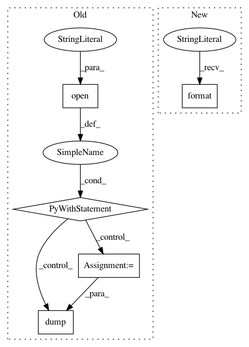

c12f538d2d496f5e8f932abc1ee72a586b9ea855,fonduer/learning/disc_learning.py,TFNoiseAwareModel,save,#TFNoiseAwareModel#Any#Any#Any#Any#,330
Before Change
saver = tf.train.Saver(tf.global_variables())
// Save model kwargs needed to rebuild model
with open(os.path.join(model_dir, "model_kwargs.pkl"), "wb") as f:
dump(self.model_kwargs, f)
// Save graph and report if verbose
saver.save(
self.session, os.path.join(model_dir, model_name), global_step=global_step
)
if verbose:
After Change
"epoch": global_step,
}
model_file = "{0}.mdl.ckpt.{1}".format(model_name, global_step)
try:
torch.save(params, "{0}/{1}".format(model_dir, model_file))
except BaseException:
In pattern: SUPERPATTERN
Frequency: 4
Non-data size: 5
Instances
Project Name: HazyResearch/fonduer
Commit Name: c12f538d2d496f5e8f932abc1ee72a586b9ea855
Time: 2018-08-14
Author: senwu@cs.stanford.edu
File Name: fonduer/learning/disc_learning.py
Class Name: TFNoiseAwareModel
Method Name: save
Project Name: snorkel-team/snorkel
Commit Name: b56a4b355dfc302fa449d223e065af3a7acac986
Time: 2018-05-03
Author: dnicholson329@gmail.com
File Name: snorkel/learning/pytorch/noise_aware_model.py
Class Name: TorchNoiseAwareModel
Method Name: save
Project Name: daavoo/pyntcloud
Commit Name: cdbe12c9ecc86fb54e6310d6aeab98edc6eba879
Time: 2017-05-02
Author: daviddelaiglesiacastro@gmail.com
File Name: pyntcloud/plot/points.py
Class Name:
Method Name: plot_PyntCloud
Project Name: okfn-brasil/serenata-de-amor
Commit Name: f799eeaec115d17693f99c6e02d3bb0eac3feaa9
Time: 2016-11-09
Author: schwendler@gmail.com
File Name: src/search_suspect_places.py
Class Name:
Method Name: write_suspicious_info